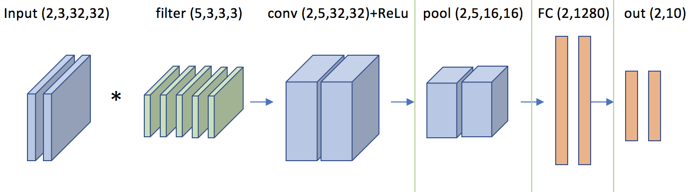

So far, you have trained regular neural network on images using different concepts like optimization, regularization, back-propagation etc. In each neural network models, the input was given as an n-dimensional array (i.e. we converted 3x32x32 images to a 1x3072 array for CIFAR-10 dataset) to the network. The number of connections that are required to connect the input to a single neuron in the following hidden layer is 3072. Since we use multiple neurons and layers while training, the number of connections further increase. Also, if the image size increases (say 3x100x100), the number of connections that are required also increase (30000). This puts a huge load on CPU even though the number of hidden layers is small as the weight updates in each layer have to be done simultaneously. CNN's overcome this disadvantage by making the explicit assumption that the inputs are images (i.e. inputs are given as 3x32x32 and not as 1x3072), which allows us to encode certain properties into the architecture. In order to learn from inputs which have a depth(D), height(H) and width(W), we use kernels/filters which also have depth (d), height (h) and width (w) such that w<W, h<H and d=D. These filters slide over the input image and take the dot product at each position thereby providing the input for the following layer. This reduces the number of connections required at each layer and at the same time increases the possibility of designing very deep networks. Below is a vizualization of simple covnet. As you will soon see, this approach of training provides much more capabilities which is not possible using regular neural networks.

CovNets use three types of layers to build a CovNet architecture: convolutional layer, pooling layer and fully connected layer. We will go into more details below, but a simple ConvNet for CIFAR-10 classification could have the architecture [INPUT - CONV - RELU - POOL - FC] as shown in fig 1.
The choice of the activation functions, regularization, optimizations that should be used within these layers will depend on individual who is training on the data.
Summary:
Let us assume N=1 as it is easy to vizualize for 1 input rather than a batch of images.
Note: Play with the below vizualization to understand the idea behind padding and stride.
Observe how the output matrix is calculated for given RGB image using the filters. The dimensions of the convolutional layer is reduced from 3x5x5 to 3x3x3. When we use multiple convolutional layers, the output will diminish to very low dimensions and this is not suitable for deep CNN's. In order to prevent this, we pad the input image with 0's such that the dimension of the output is not changed. Click on 'add pad' button and observe the output matrix. Note that padding is a hyper-parameter just like learning rate/momentum.
The dimensions of output is also controlled by the stride. When the stride is 1 then we move the filters one pixel at a time. When the stride is 2 then the filters jump 2 pixels at a time as we slide them around. This will produce smaller output volumes spatially.
| 4 | 1 | 0 | 3 | 0 |
| 2 | 0 | 0 | 4 | 0 |
| 1 | 4 | 4 | 3 | 4 |
| 2 | 4 | 4 | 0 | 3 |
| 2 | 1 | 4 | 2 | 0 |
| 4 | 4 | 4 | 3 | 2 |
| 3 | 3 | 2 | 4 | 0 |
| 4 | 1 | 2 | 1 | 0 |
| 4 | 1 | 0 | 1 | 2 |
| 3 | 2 | 2 | 0 | 3 |
| 3 | 3 | 0 | 1 | 1 |
| 0 | 4 | 3 | 4 | 0 |
| 2 | 0 | 2 | 4 | 3 |
| 0 | 4 | 1 | 3 | 1 |
| 1 | 2 | 3 | 1 | 0 |
| 4 | 4 | 2 |
| 3 | 3 | 0 |
| 0 | 1 | 1 |
| 4 | 4 | 2 |
| 3 | 3 | 0 |
| 0 | 1 | 1 |
| 4 | 4 | 2 |
| 3 | 3 | 0 |
| 0 | 1 | 1 |
| 0 | 0 | 0 |
| 0 | 0 | 0 |
| 0 | 0 | 0 |
| 0 | 0 | 0 |
| 0 | 0 | 0 |
| 0 | 0 | 0 |
| 0 | 0 | 0 |
| 0 | 0 | 0 |
| 0 | 0 | 0 |
| 0 | 0 | 0 |
| 0 | 0 | 0 |
| 0 | 0 | 0 |
In the above example, we assumed stride = 1.
Backward Pass: During the backward pass the updates happen as the gradients slide over the input just like in the forward pass.
Summary:
Pooling layer is generally used in between successive convolutional layers. Its main purpose is to reduce the spatial dimension of across the layers. This raises a question, why to use pooling when convolutional layer can reduce the dimension when no padding is used. The difference is that pooling layer just resizes its input by averaging over fixed number of pixels (therefore output will have all importatn structures that are inherent in the input) while the convolutional layer changes the features that can be identified with/ without padding. Note that padding is not commonly used for pooling layer.
The Pooling Layer operates independently on every depth slice of the input and resizes it spatially, using the MAX operation. The most common form is a pooling layer with filters of size 2x2 applied with a stride of 2 downsamples every depth slice in the input by 2 along both width and height, discarding 75% of the activations. Every MAX operation would in this case be taking a max over 4 numbers (little 2x2 region in some depth slice). The depth dimension remains unchanged.
| 1 | 3 | 12 | 24 | 22 |
| 53 | 32 | 24 | 27 | 21 |
| 73 | 30 | 24 | 52 | 12 |
| 17 | 40 | 62 | 32 | 22 |
| 37 | 60 | 32 | 42 | 25 |
| 0 | 0 |
| 0 | 0 |
In the above example, we chose the stride = 2
Backward Pass: The backward pass for pooling layer will be similar to that of dropout. Only the max values which are considered during forward pass will be updated.
The fully connected layers are identical to regular neural networks. The forward and backward step functions which was written previously was capable of finding the dot product of dimensions (N,D).(D,C). However, the dot product with kernels is slightly complicated as the dimensions are in shape (N,D,W,H). In order to facilitate both (N,D) and (N,D,W,H) shapes, you need to modify the functions appropriately.
Since we are not aiming to write optimized version of code for CNN, we will only implement the convolutional and pooling functions and run it on small sample dataset. You will use tensorflow to implement the same architecture on complete training and testing dataset.